300 вопросов о цигун. Секреты китайской медицины. Содержание
Эти упражнения составлены на основе обычной гимнастики с палкой и цигуна по регулированию дыхания. Используемые предметы очень просты, движения несложны и легко осваиваются, достигается хороший лечебный эффект. Во время выполнения упражнений необходимо соблюдать точность поз, строго выдерживать ритмичность движений, совмещать их с дыханием. Эта гимнастика особенно подходит для людей с ослабленным здоровьем.
Для занятий надо приготовить деревянную или бамбуковую палку длиной 90 см и диаметром примерно 2 см.
Первое упражнение: "двумя руками поднимать палку" (рис. 145, 146).
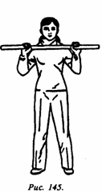
_____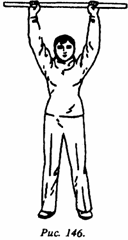
Встать в естественную стойку; руки параллельны друг другу на ширине плеч; верхняя часть корпуса выпрямлена, естественно расслаблена; расстояние между руками на палке 60-70 см; палка находится перед грудью. Выполняются такие движения: руки, сжимающие палку, поднимаются вверх над головой, одновременно делается вдох; руки возвращаются в исходную позицию, одновременно делается выдох.
Важные моменты: поднимать палку вверх надо медленно с усилием, используя "внутреннюю силу", голова все время держится прямо; опускать палку также медленно; совмещать движения с дыханием. Вдыхать через нос, выдыхать через рот. Упражнение выполняется 20 раз (вдох-выдох считается за один раз).
Второе упражнение: "параллельно земле отталкивать палку перед грудью" (рис. 147, 148).
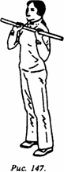
_____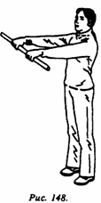
Присоединяется к предыдущему упражнению: при отталкивании двумя руками палки от груди параллельно земле делается вдох; при возвращении рук в исходную позицию делается выдох.
Важные моменты: палка двигается параллельно земле при движении от груди и обратно. При отталкивании палки следует использовать "внутреннюю силу". Необходимо координировать дыхание и движения. Выполняется 20 раз (вдох-выдох считается за один раз).
Третье упражнение: "развороты влево и вправо параллельно земле" (рис. 149, 150).
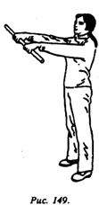
_____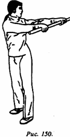
Присоединяется к предыдущему упражнению: руками отталкивают от груди палку вперед параллельно земле, одновременно делают вдох; верхняя часть корпуса делает разворот влево, руки, держащие палку, отводятся влево до упора, сохраняя параллельное положение относительно земли; одновременно делают выдох. Возвращают вытянутые руки в положение перед грудью; одновременно делается вдох. Затем притягивают палку к груди, одновременно делая выдох. После этого выполняется разворот вправо по такой же схеме, что и влево.
Важные моменты: при исполнении разворотов рук с палкой вправо и влево движения делаются до упора. Упражнение выполняется 20 раз (развороты влево и вправо считаются за один раз).
Четвертое упражнение: "вращать плечами, желая стать драконом" (рис. 151-153).
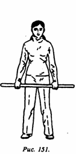
__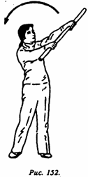
__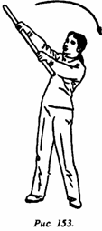
Присоединяется к предыдущему упражнению. Приподнять вверх левый конец палки, удерживаемой двумя руками, с одновременным выдохом. Очертив круг перед грудью, палка естественным образом возвращается в исходную позицию; одновременно делается выдох. Так же выполняется разворот конца палки вправо с одновременным вдохом. Очертив круг, палка естественным образом возвращается в исходную позицию, при этом делается выдох.
Важные моменты: при круговых движениях палки руки остаются выпрямленными, вращения палки следует делать непрерывно, достигая максимальной высоты. Упражнение выполняется 20 раз (развороты вправо и влево считаются за один раз).
Пятое упражнение: "разминать тазобедренный сустав в четыре стороны" (рис. 154-157).
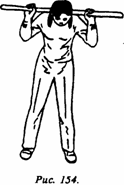
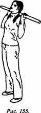
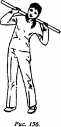
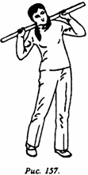
Присоединяется к предыдущему упражнению. Естественная поза, ступни параллельны друг другу, носки обращены вперед, ноги стоят на ширине плеч. Палка размещается на задней стороне шеи; руки параллельны друг другу. При наклоне вперед делается вдох, при возвращении в исходную позицию - выдох. При запрокидывании тела назад делают вдох, при возвращении в исходную позицию - выдох. При наклоне туловища влево делают вдох, при возвращении в исходную позицию - выдох. При наклоне туловища вправо делают вдох, при возвращении в исходную позицию - выдох.
Важные моменты: наклоны вперед, назад, влево и вправо делаются до упора, при этом ноги в коленях не сгибаются, прямые. Упражнение выполняется 10 раз (наклон вперед, назад, вправо и влево считается за один раз).
Шестое упражнение: "махи ногой влево и вправо" (рис. 158, 159).
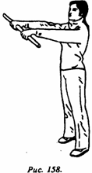
_____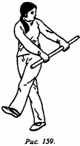
Присоединяется к предыдущему упражнению. С шеи палку перемещают в положение перед грудью на вытянутых руках, при этом делают вдох. Одновременно с махом левой ноги вправо вверх палку перемещают налево назад, делается выдох. При возвращении палки в исходную позицию делается вдох. Одновременно с махом правой ноги влево вверх палка перемещается вправо назад, делается выдох.
Важные моменты: во время махов ногами стопа должна быть прямой, махи делаются до упора; одновременно с махами ног руки с палкой отводятся в сторону и назад до упора. Упражнение выполняется 20 раз (движения вправо и влево считаются за один раз).
Седьмое упражнение: "поднимать палку вверх, вытягиваться назад" (рис. 160-162).
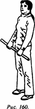
__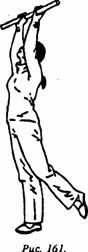
__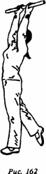
Присоединяется к предыдущему упражнению. Тело прямое, палку держат обеими руками, опущенными свободно вниз, перед бедрами. Одновременно с подниманием вверх палки левая нога отставляется вытянутой назад, при этом делается вдох. При опускании палки вниз в исходную позицию делается выдох. Одновременно с подниманием палки вверх правая нога вытягивается назад и делается вдох. При опускании палки вниз в исходную позицию делается выдох.
Важные моменты: необходимо координировать поднимание палки вверх и вытягивание ног назад, при этом движения делаются до упора с вытягиванием всего тела. Упражнение выполняется 20 раз (вытягивание левой и правой ног назад считается за один раз).
Восьмое упражнение: "сгибание поясницы, сгибание ног в коленях" (рис. 163-166).
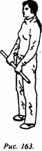
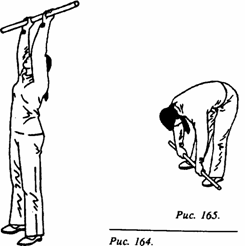
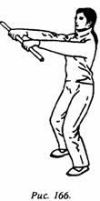
Присоединяется к предыдущему упражнению. При поднятии палки над головой сделать вдох. При опускании палки с давлением вниз сгибается поясница и делается выдох. Выталкивание палки вперед параллельно земле сопровождается сгибанием ног в коленях, при этом делается вдох. При возвращении в исходную позицию с установкой палки перед бедрами делается выдох.
Важные моменты: при опускании палки с давлением вниз ноги в коленях не сгибаются, при этом стараются максимально согнуть поясницу. Упражнение выполняется 20 раз (сгибание поясницы и ног считается за один раз).
Девятое упражнение: "приседания и подъемы" (рис. 167, 168).
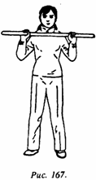
_____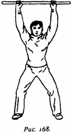
Присоединяется к предыдущему упражнению. Первоначально палка находится на уровне груди, без напряжения. Палку поднимают над головой, при этом сгибают ноги в коленях и делают вдох. Затем палку спокойно опускают на уровень груди, возвращаясь в исходную позицию, одновременно делается выдох.
Важные моменты: сгибание ног необходимо координировать с поднятием вверх палки. Упражнение выполняется 20 раз (сгибание ног и возвращение в исходную позицию считаются за один раз).
Десятое упражнение: "распрямлять грудь, двигаясь вперед" (рис. 169, 170).
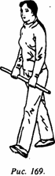
_____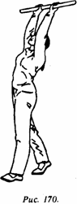
Присоединяется к предыдущему упражнению. Левая нога на полшага выставляется вперед. Одновременно с поднятием палки над головой распрямляют грудь, пятка правой ноги отрывается от земли, центр тяжести перемещается на левую ногу, делается вдох. Вместе с опусканием палки вниз до положения перед левым бедром делается выдох.
Важные моменты: необходимо координировать распрямление груди во время поднимания палки вверх с отрывом пятки от земли.
После повторения упражнения 20 раз выставить на полшага вперед правую ногу и выполнить аналогичным образом еще 20 движений.
300 вопросов о цигун. Секреты китайской медицины. Содержание